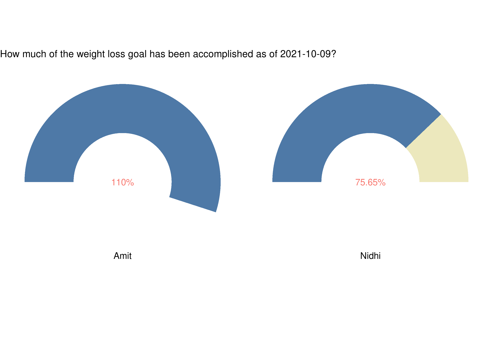
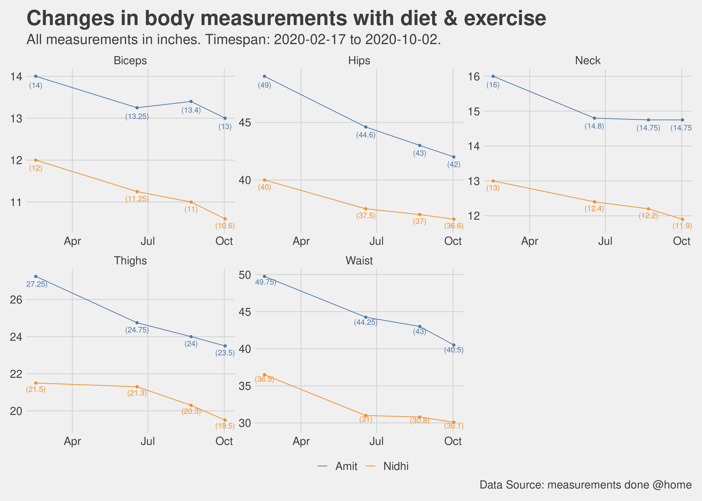
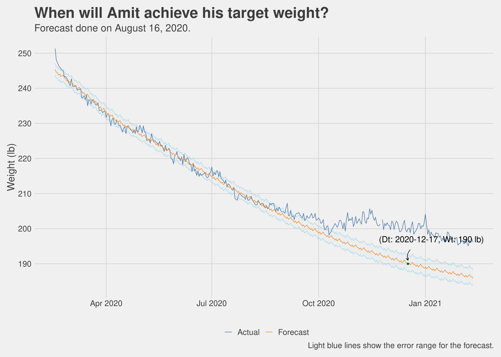

Chapter 6 What did we accomplish?
I have said this earlier in this book, my initial goal in meeting with a trainer and going to the gym was to lose weight, but as we started sweating it out I realized that we were getting a lot more out of this exercise and clean eating regimen than just a lighter body. Even so, weight loss and overall getting the body in a better shape are important goals, so how did we fare on these?
| Important Metrics | ||
|---|---|---|
| Key data points that describe the journey | ||
| Metric | Amit | Nidhi |
| Days since start | 600 | 600 |
| Days taken to lose last 10 pounds | 48 | 577 |
| Starting Weight (lb) | 251.33 | 151.9 |
| Current Weight (lb) | 183.87 | 133.82 |
| Total weight loss (lb) | 67.461 | 18.082 |
| Best Weight loss month | May, 11.91 lb | Oct, 9.26 lb |
| Source: Daily measurements done @home | ||
|
1
26.84% of the starting body weight.
2
11.9% of the starting body weight.
|
||
I would be remiss if I do not mention that men and women respond to exercise and diet differently. While it is true that I had a lot of weight to lose as compared to Nidhi, but it is also true that she was losing weight at a much slower pace and had several phases where her weight loss just stalled. Both of us did the same workouts (for the most part) and ate pretty much the same food, but I could lose weight and she found it very hard. Important to have realistic expectations and continuously work with your trainer to evaluate what could be tweaked.
6.1 Percentages are revealing
I reached my weight goal of 190lb in in early 2021 and then decided to go even lighter so that I weight between 180lb to 185lb. I am no longer obese, although technically overweight. However, I am much lighter and much stronger at 42 years of age than I felt at 22 years. I bet 22 year old me would not be able to run a mile without gasping for air, more like not able to run a mile at all, period. I have a target of being able to deadlift 400lb and so I intend to stay around 185lb and not lose any more weight. Once you understand how your body responds to certain foods and cut out refined sugar from your diet, losing weight becomes straight forward unless you have other issues.
So net-net in about 22 months, I lost about 27% of my body weight and Nidhi lost about 12%. Not too bad. In terms of how far we have progressed compared to the goals we started with, well the goals are just milestones along the way, the journey continues.

6.2 Changes in other biometrics
Along with the body weight, other metrics also saw significant change. This is seen in the following charts. BMI is widely used (I suppose accepted as well) measurement to determine if someone is healthy, obese or overweight. We saw reduction in BMI as well which as expected is correlated to the reduction in weight. NIH guidelines for BMI are available here for reference.
All measurements in the charts below were done automatically as part of the daily metrics measured by the scale and synched with our phone. This made it really easy to collect and analyze this data.

6.3 Body measurements
Weight and BMI is not the only metric we tracked, these metrics are often times all we think in terms of measuring but there is more. Just as the proof of the pudding is in the eating, the proof of the weight loss is in the wearing (of clothes). As we kept on making progress in our journey, the clothes started fitting well at first, then getting loose and the finally it reached a point where most of our old clothes were just too big and this necessitated a wardrobe refresh. A happy problem to have.
We tracked this by doing body measurements once every few months. The charts below have a story to tell.

6.4 Of slides and plateaus
Anyone who has embarked on a journey to lose more than say 10 pounds would identify with the fact that the weight loss trajectory is never a linear slide downwards, no matter how determined you are in your desire and dogged in your persuasion. It was the same for us, there were days and weeks which were very good, especially at the start and then their were periods where the weight loss yo-yoed. These periods were disappointing, disheartening even.
It is important to understand, as we discovered, that as we are subjecting the body to a different sort of eating regimen and making more and more demands of it by way of workouts in the gym, the body is also trying to recalibrate its response. It is figuring out how much fat to store as energy reserves, how much to burn to provide the fuel for the exercise. This means that sometimes the weight loss may completely stall or even go in the reverse. The key is to be patient and keep eating clean (relatively speaking) and putting in the hours in the gym without completely burning out.
The chart below shows the week by week distribution of the weight and as you can see there were at least a couple of streaks of plateaued weight loss. We persisted, and ultimately, we prevailed.
6.5 A forecast and a promise
As we were going through this journey, I was very eager to apply some forecasting and determine if we could project a reasonable date when we would be able to meet our weight loss target. As much as this book is not just about weight loss, there is no denying the fact that it was one of the most (if not the most) tangible outcome we were tracking towards.
NOTE: I did this forecast in August of 2020 and tracked it till December 2020. Forecasting weight loss is a very complex mathematical problem because it depends upon a multiplicity of (changing) features. I did achieve my target in early 2021 but kept these charts as is as a reminder of where we started and what I was thinking as being possible a few months into the journey.
Once we had collected a reasonable amount of data, I used standard timeseries forecasting techniques to determine how our weights would look say 30, 90 or 180 days from the current date. I used the Prophet package from Facebook AI Research (FAIR) to do the timeseries forecast. The results are presented below. This forecast was done on August 16, 2020 and as per this forecast we should be able to achieve our target weight (128 lb) in early October for Nidhi and mid-December for me (190 lb).
Once we had these forecasted date and the plots created, we started monitoring very closely if our daily weight measurements were within the range of errors as shown in these plots. Some days the weight did creep out of the error limits but then it served as a nice tool to keep us honest, so in a manner of speaking we knew how much we could deviate. So if an Indian takeout dinner one evening did set us back, we knew we had to make up for it in the next few days to come back within acceptable range. So far it seems the projects are holding up reasonably well. If nothing else, it provides certain guard rails to not let one go completely off track. The promise still is, if we keep doing what we have been diligently doing, we should be able to achieve our goals around, if not exactly on, the forecasted date. It is important to mention here that this simple forecast is considering the weight loss as a single variable timeseries, we know it is much more complicated than that. There are a lot of factors that would go into making a much more accurate weight loss forecast (if I could do that then maybe I would be writing a different book :)). This is just a simple attempt.

6.6 Losing weight is one thing but keeping it off…
Anybody who has ever lost any amount of weight, even if it is 5 pounds (or some would say especially if it is 5 pounds) would tell you that it always comes back. Well, how did we fare in that regards?
The chart below shows my daily body weight since the start of 2020. I was able to reach my target body weight of 190lb and have been able to maintain between 185lb to 190lb since then (7 months as of this writing). No mean feat for someone who had never been fit before and the good part is that I have been able to do it not by taping into some deep hidden reserves of will power but all while leading what I would consider a normal lifestyle that involves vacations, eating out and having a decent social life. In other words, it did not involve living in a cave or carrying my own food with me everywhere.